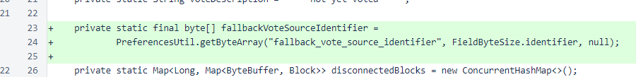
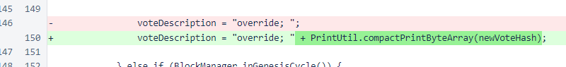
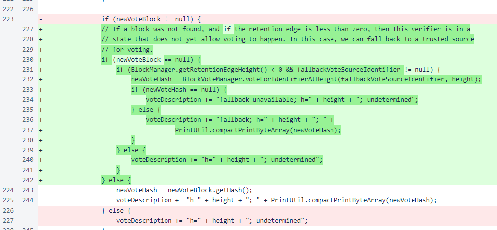

Nyzo version 535 (commit on GitHub) adds a fallback vote source for verifiers with insufficient blockchain history for calculating their own votes.
This version affects the verifier only.
In BlockVoteManager, a method has been added for retrieving the vote from a specified verifier at a specified height. This is used by the new voting logic to synchronize the local vote with the vote from another verifier.

In UnfrozenBlockManager, the fallbackVoteSourceIdentifier field has been added.
To provide an example, if you put the following line in /var/lib/nyzo/production/preferences, your verifier will vote with Nyzo 0 when it does not yet have enough blocks to calculate a vote of its own (don't rely on Nyzo 0, though, as it will be deactivated soon):
fallback_vote_source_identifier=b5fd3e8d789a5055-091e46db881f1b74-1b0ab6f8d65b21ae-88cc543dfd92173b
The vote description, which is displayed in the status response, has been updated to show the vote hash when an override is set.
Finally, the actual fallback logic has been implemented in the updateVote() method. The fallback is only used if the retention edge is less than 0, which means that the verifier does not currently have enough knowledge of the blockchain to calculate its own vote.
